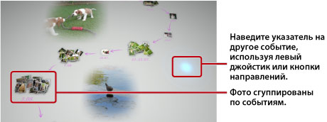

Просмотр фотографий
При запуске программы Photo Gallery все фотографии, сохраненные на системном накопителе системы PS3™, будут автоматически проанализированы и сгруппированы "по событиям". Группы создаются на основе данных о времени съемки.
Выбор событий
Для выбора фотографий и событий используйте левый джойстик или кнопки направлений. Чтобы выбрать несколько фото или событий, при выборе каждого следующего нажимайте кнопку  .
.

Изменение режима просмотра фото
Чтобы изменить режим просмотра, выберите группы или события и нажмите кнопку  . Варианты режимов просмотра показаны на рисунке ниже. Чтобы вернуться к предыдущему режиму просмотра, нажмите кнопку
. Варианты режимов просмотра показаны на рисунке ниже. Чтобы вернуться к предыдущему режиму просмотра, нажмите кнопку  .
.
Подсказка
При просмотре фотографии в полноэкранном режиме вы можете использовать панель управления в разделе  (Фото) меню XMB™, нажав кнопку
(Фото) меню XMB™, нажав кнопку  . Функции панели управления можно применить к отображаемой фотографии.
. Функции панели управления можно применить к отображаемой фотографии.
Просмотр фотографий в слайд-шоу
Для просмотра слайд-шоу своих фотографий выберите список воспроизведения или событие на экране [Область библиотеки], нажмите кнопку , а затем выберите  (Слайд-шоу). На открывшемся экране установите параметры слайд-шоу, описанные ниже, и выберите [Запуск].
(Слайд-шоу). На открывшемся экране установите параметры слайд-шоу, описанные ниже, и выберите [Запуск].
| Стиль слайд-шоу | Вариант отображения фотографий в слайд-шоу. |
|---|---|
| Скорость слайд-шоу | Скорость смены кадров при просмотре слайд-шоу. |
| Сортировка | Порядок просмотра фотографий. |
| Музыка для слайд-шоу | Фоновая музыка из числа предусмотренных приложением Photo Gallery музыкальных композиций. |
 |
Фоновая музыка в разделе  (Музыка) на экране XMB™. (Музыка) на экране XMB™. |
Подсказки
- При просмотре слайд-шоу вы можете использовать панель управления в разделе (Фото), нажав кнопку . После этого функции панели управления можно применить к слайд-шоу.
- При просмотре фотографий на экране [Область библиотеки] можно выбрать вариант [По степени сходства] в разделе [Сортировка], чтобы расположить снимки последовательно, в зависимости от степени их сходства.
Изменение фоновой музыки
Вы можете изменить фоновую музыку, которая звучит во время просмотра фотографий. Нажмите кнопку PS на беспроводном контроллере и, когда отобразится экран XMB™, перейдите в раздел (Музыка) и выберите ту музыкальную композицию, которую хотите слушать при просмотре фото.
Подсказки
- Чтобы изменить фоновую музыку, которая будет использоваться при каждом просмотре слайд-шоу, выберите новую музыку перед началом просмотра.
- Если при использовании Photo Gallery вы выбрали в качестве фоновой музыки композицию, сохраненную на носителе информации, а затем начали воспроизведение слайд-шоу, воспроизведение музыки может не продолжиться после окончания слайд-шоу.